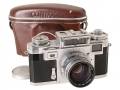
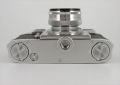
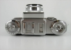

pecksniff2006-06-11 13:464.5 分
操作性 4.00功能性 4.00美观性 5.00趣味性 5.00耐用性 5.00性价比 4.00
乡间浪人2004-12-09 11:343.5 分
操作性 3.00功能性 3.00美观性 4.00趣味性 3.50耐用性 3.50性价比 4.00
XDS2004-04-27 23:563.33 分
操作性 3.50功能性 3.50美观性 4.50趣味性 2.50耐用性 3.00性价比 3.00

DrDing2002-09-05 18:054.67 分
操作性 4.00功能性 4.50美观性 5.00趣味性 5.00耐用性 5.00性价比 4.50

DrDing2002-08-20 13:56
